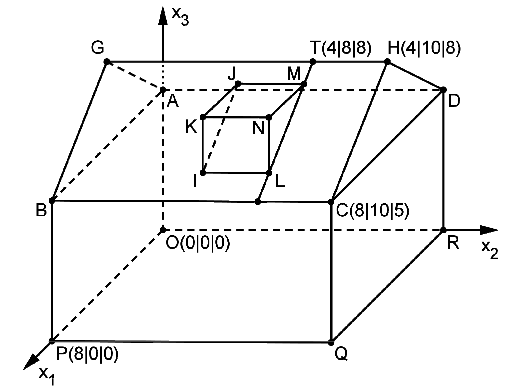

Bayerisches Abitur in Mathematik 2014¶
Aufgabe
Die Abbildung zeigt modellhaft ein Einfamilienhaus, das auf einer horizontalen Fläche steht. Auf einer der beiden rechteckigen Dachflächen soll eine Dachgaube errichtet werden. Die Punkte \(A\), \(B\), \(C\), \(D\), \(O\), \(P\), \(Q\) und \(R\) sind die Eckpunkte eines Quaders. Das gerade dreiseitige Prisma \(LMNIJK\) stellt die Dachgaube dar, die Strecke \([GH]\) den First des Dachs, d. h. die obere waagrechte Dachkante. Eine Längeneinheit im Koordinatensystem entspricht 1 m, d. h. das Haus ist 10 m lang.
Berechnen Sie den Inhalt derjenigen Dachfläche, die im Modell durch das Rechteck \(BCHG\) dargestellt wird.
In der Stadt, in der das Einfamilienhaus steht, gilt für die Errichtung von Dachgauben eine Satzung, die jeder Bauherr einhalten muss. Diese Satzung lässt die Errichtung einer Dachgaube zu, wenn die Größe des Neigungswinkels der Dachfläche des jeweiligen Hausdachs gegen die Horizontale mindestens 35° beträgt. Zeigen Sie rechnerisch, dass für das betrachtete Einfamilienhaus die Errichtung einer Dachgaube zulässig ist.
Die Dachfläche, auf der die Dachgaube errichtet wird, liegt im Modell in der Ebene
Die Dachgaube soll so errichtet werden, dass sie von dem seitlichen Rand der Dachfläche, der im Modell durch die Strecke \(HC\) dargestellt wird, den Abstand 2 m und vom First des Dachs den Abstand 1m hat. Zur Ermittlung der Koordinaten des Punkts \(M\) wird die durch den Punkt \(T(4|8|8)\) verlaufende Gerade
betrachtet.
Begründen Sie, dass \(t\) in der Ebene \(E\) verläuft und von der Geraden \(HC\) den Abstand 2 besitzt.
Auf der Geraden \(t\) wird nun der Punkt \(M\) so festgelegt, dass der Abstand der Dachgaube vom First 1 m beträgt. Bestimmen Sie die Koordinaten von \(M\).
(Ergebnis: \(M(4{,}8|8|7{,}4)\) )
Die Punkte \(M\) und \(N\) liegen auf der Geraden
die im Modell die Neigung der Dachfläche der Gaube festlegt. Die zur \(x_3\)-Achse parallele Strecke \([NL]\) stellt im Modell den sogenannten Gaubenstiel dar; dessen Länge soll 1,4 m betragen. Um die Koordinaten von \(N\) und \(L\) zu bestimmen, wird die Ebene \(F\) betrachtet, die durch Verschiebung von \(E\) um 1,4 in positive \(x_3\)-Richtung entsteht.
Begründen Sie, dass \(3x_1+4x_3-49{,}6=0\) eine Gleichung von \(F\) ist.
Bestimmen Sie die Koordinaten von \(N\) und \(L\).
(Teilergebnis: \(N(7{,}2|8|7)\) )
Lösung zu Teil a
Die Fläche eines Rechtecks berechnet sich durch Multiplikation aus Länge und Breite:
Hierfür bestimmen wir zunächst aus der Skizze die Punkte \(B(8|0|5)\) und \(G(4|0|8)\). Mit \(C(8|10|5)\) erhalten wir
Die gesuchte Fläche beträgt also 50 m².
Mit Sage legen wir zunächst alle Punkte fest und überprüfen anschließend das Ergebnis.
Lösung zu Teil b
Den Winkel zwischen zwei Vektoren \(\vec{a}\) und \(\vec{b}\) berechnet sich durch den Kosinussatz:
Sage liefert uns mit Hilfe der Formel einen Wert von etwa \(37^°\). Das Haus erfüllt also die Satzung.
Lösung zu Teil c
Wir setzen die Gerade \(t\) in die Ebenengleichung ein:
\(t\) verläuft also in der Ebene. Die Gerade
ist offensichtlich parallel zu \(t\). Der Abstand zwischen \(t\) und \(HC\) ist gleich dem Abstand der Punkte \(T\) und \(H\):
Dies wird von Sage bestätigt:
Lösung zu Teil d
Der Abstand eines durch \(\lambda\) gegebenen Punktes vom Punkt \(T\) ist durch
gegeben. Für \(\lambda=\pm\frac{1}{5}\) beträgt der Abstand 1. Dies ergibt sich auch mit Hilfe von Sage.
Allerdings ist nur die Lösung mit positivem \(\lambda\) sinnvoll, da der andere Punkt oberhalb des Firstes liegt. Somit ergibt sich der Punkt \(M(4{,}8|8|7{,}4)\).
Lösung zu Teil e
Durch eine Verschiebung von \(E\) um 1,4 in positive \(x_3\)-Richtung lässt sich die Ebenengleichung folgendermaßen umschreiben:
Lösung zu Teil f
Einsetzen der Geradengleichung für \(m\) in die Ebenengleichung von \(F\) ergibt
Damit ergibt sich durch Einsetzen in die Geradengleichung von \(m\) der Punkt \(N(7{,}2|8|7)\) und durch Verschieben um \(-1{,}4\) in \(x_3\)-Richtung der Punkt \(L(7{,}2|8|5{,}6)\). Diese Ergebnisse erhält man mit Sage folgendermaßen: